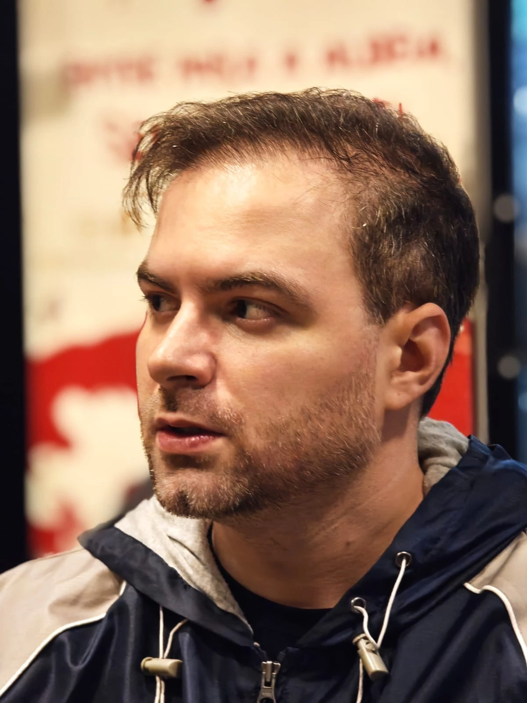

Use a IA para tocar o caso inteiro, dos autos ao cliente, e não só para escrever peças.
Toque no botão abaixo e entre no grupo silencioso. Lá você recebe o acesso à aula em que eu mostro, num caso real, como a IA lê os autos, encontra a jurisprudência com fonte, revisa a peça com olhos de adversário e ainda explica o processo para o seu cliente.
Aula: [dia da semana], [DD/MM] às [HH]h
A maioria dos advogados parou no "escreve uma petição pra mim".
E aí a IA vira um gerador de texto que você ainda precisa conferir linha por linha, caçar a fonte de cada julgado e torcer para nada ter sido inventado. O tempo que deveria sobrar continua indo para ler PDF, organizar documento, controlar prazo e explicar o processo para o cliente pela décima vez.
O problema não é a IA. É usar só a última etapa dela.
O que você vai ver funcionando na aula:
Pronto. Organizei a pasta e montei o sumário do caso.
O que fiz
- Criei autos/ e analise/ e movi os três PDFs, com nomes que refletem o tipo de cada documento.
- Li e indexei os 3 documentos (todos com texto, nenhum escaneado).
- Gravei o mapa do caso em analise/SUMARIO.md (partes, documentos, linha do tempo, teses e pendências).
Do que se trata: processo penal por tráfico de drogas (art. 33 da Lei 11.343/2006). O réu foi preso em flagrante. O ponto central do litígio é o tráfico privilegiado: a defesa quer a causa de diminuição do art. 33, § 4º; o MP pede o afastamento do redutor.
Nada ficou sem leitura. Uma pendência: os autos não identificam o advogado da defesa (convém confirmar a constituição).
/organizar
Autos organizados antes do primeiro PDF
Pasta de PDFs soltos virando autos organizados com sumário do caso: partes, linha do tempo, teses e pendências.
/buscar-fontes
Cada tese com fonte, até as que pesam contra
Jurisprudência levantada com o julgado, a tese que sustenta e o link para o inteiro teor, incluindo os precedentes desfavoráveis.
Li a peça como o Ministério Público leria. Os fatos conferem com os autos e as citações conferem com a fonte. Fiz dois ajustes:
- antecipei o argumento da variedade das drogas, que o MP vai explorar, com o próprio precedente do TJPR;
- o pedido de substituição da pena estava sem fonte: incluí o art. 44 do CP, que já está em LEGISLACAO.md.
Arquivos alterados: 1 +3 −1
EXCELENTÍSSIMO SENHOR DOUTOR JUIZ DE DIREITO DA VARA CRIMINAL DA COMARCA DE EXEMPLÓPOLIS/PR
JOÃO DA SILVA EXEMPLO, já qualificado nos autos, vem, por seu advogado, apresentar ALEGAÇÕES FINAIS POR MEMORIAIS, pelas razões a seguir.
O réu é primário, tem trabalho formal e residência fixa, como consta do auto de prisão em flagrante.
Nesse sentido, o TJPR manteve a causa de diminuição na fração máxima ao considerar preenchidos os requisitos de primariedade, bons antecedentes e ausência de dedicação habitual (TJPR, 0046969-73.2024.8.16.0014).
A variedade das substâncias, por si só, não demonstra dedicação a atividades criminosas, como decidiu o mesmo precedente.
Requer o reconhecimento do tráfico privilegiado na fração de 2/3 e a substituição da pena nos termos do art. 44 do Código Penal.
/revisar
A peça lida com olhos de adversário
Cada fato conferido contra os autos e cada citação contra a fonte, antes que o outro lado aponte.
Na aula você vai entender como a IA trabalha em cada etapa do caso:
Ler: os autos organizados antes de você abrir o primeiro PDF
Aponte a pasta do caso e a IA lê tudo, organiza os documentos, monta o sumário e mostra o ponto central do litígio e o que ficou pendente nos autos.
Fundamentar: cada tese com fonte, inclusive as que pesam contra
Pesquisa em mais de 50 milhões de julgados, com legislação e jurisprudência conferidas e linkadas. Você vê o que sustenta cada tese e o que a parte contrária vai usar.
Revisar: a peça lida com olhos de adversário
Depois de redigir, a IA confere cada fato contra os autos e cada citação contra a fonte, e aponta onde a peça está fraca antes que o outro lado aponte.
Atender: o cliente entendendo o próprio processo
Uma apresentação do caso sem juridiquês, com a marca do seu escritório, e as intimações dos seus processos chegando num só lugar.
Ler. Fundamentar. Revisar. Atender.
A peça é só uma parte do caso.

Quem vai conduzir a aula?
Agora que você já viu o que a IA faz em cada etapa, conheça quem vai mostrar como aplicar isso no seu escritório.
Rossano Dala Rosa é CEO e fundador da Advoga IA. Desde 2022 cria soluções jurídicas com inteligência artificial, e nesse caminho mais de 26 mil advogados já usaram as ferramentas da Advoga IA no dia a dia do escritório.
Acompanhando esses advogados de perto, percebeu um padrão: a maioria usa IA apenas para gerar texto, e continua gastando o dia com leitura de autos, pesquisa sem fonte e revisão manual. Foi para resolver o caso inteiro, e não só a peça, que a Advoga IA foi construída.